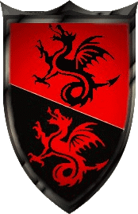

| Übersicht,
Kampf und Magie |
|
[s] Skellette
|
| Iga Pelogran (RIP) |
Hab mal ne Frage, wo finde ich ein oder mehrere nette Skellnester.
Folgende Voraussetzung:
- Frei Zugänglich
- GH in der Nähe
- Gruppengröße: 5 bis 20
- spwant oft oder endlos |
17.02.10 13:06

|
|
| Iga Pelogran (RIP) |
DAnke für die vielen Zuschriften. |
20.02.10 8:36
|
|
Thor spinnt
 |
*den Anschlag mal wieder hervor kramt*
Wenn mir jemand ebenfalls Nester empfehlen könnte, wäre ich sehr dankbar. |
25.03.10 14:09
 |
|
| Lorimbas Stahlherz (RIP) |
da schliess ich mich mal an |
31.03.10 0:46
|
|
Otin ni Shim
 |
ich suche ein Spinnennest mit den selben Bedingungen. Wäre dankbar, wenn mir jemand weiterhelfne könnte |
31.03.10 14:33
|
|
Thor spinnt
|
gibt es denn keine nester mehr? orks, gobbos und skells wären in meinem interesse :) |
01.04.10 8:33
|
|
| Chantico (RIP) |
dito! gasthaus ist nicht zwingend erforderlich, aber praktisch.
ich nehm eigentlich fast alles. ideal sind orks, skells, gobbos oder ramsporne.
danke :-) |
02.04.10 17:09
|
|
| Lorimbas Stahlherz (RIP) |
Wie mir schient horten alle ihre endlos nester, wobei ich skell bräuchte oder zumindest zugang zu einem endlosnest. |
30.04.10 9:36
|
|
| Kalisz (RIP) |
Jupp, ich suche auch nach einem Skell-Endlosnest.
Über hilfreiche Tauben oder Angaben hier wäre ich froh. |
05.05.10 19:28
|
|
Shalir Norcain-Blutsäufer
 |
Ich Suche ein Skell entlos nest oder ein Spinnen endlos Nest ;) Lasse gerne viel Gold in den Gasthäusern ;)
Suche auch nicht zwingend Frei zugänbgliche ;) Passierscheine nehm ich auch entgegen *grins* |
08.05.10 14:45
|
|
Übersicht,
Kampf und Magie
|